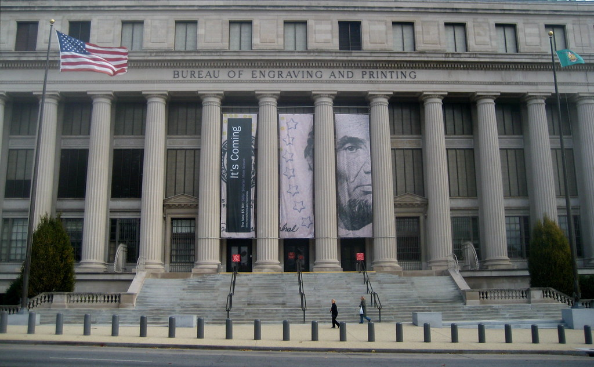
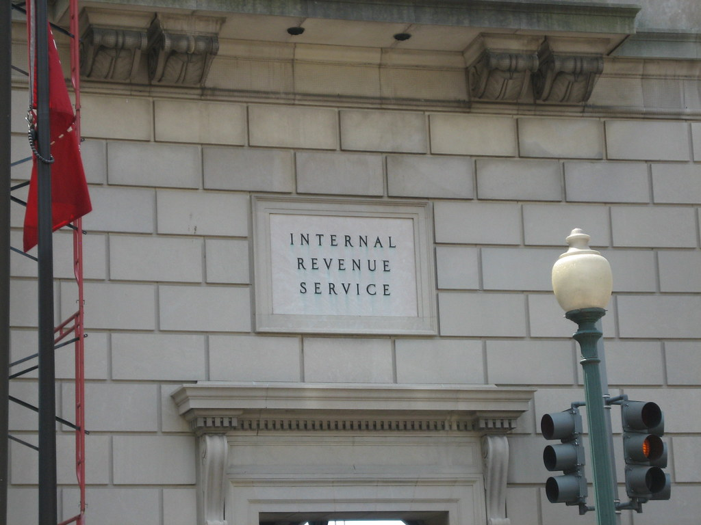

The U.S. Department of the Treasury was created when the U.S. constitution was ratified in 1789. Alexander Hamilton was the first leader of this division with the purpose to help control the national debt.
The role of the Treasury Department is to promote economic prosperity and make sure the U.S. and international financial systems are in good shape and secure.
The Department controls systems that are important to the nation's financial infrastructure. Such as printing money and creating coins. Although it is the Fed that decides how much is printed. The Treasury is also responsible for distributing payments to the American public, for example the covid payments. Finally they also collect taxes and borrow the funds necessary to run the federal government.
With the help of other federal agencies, foreign governments, and international financial institutions, the Department works to encourage global economic growth, raise standards of living, and halt economic and financial crises.
The Treasury Department also plays a big role in enhancing national security. They do so by improving the safeguards of our financial systems, putting sanctions against foreign threats to the U.S., and attacking the financial support networks of national security threats.
Different Bureaus
THE ALCOHOL AND TOBACCO TAX AND TRADE BUREAU (TTB)
The Alcohol and Tobacco Tax and Trade Bureau job is to enforce and manage laws involving the production, use, and distribution of alcohol and tobacco products. TTB also collects excise taxes for firearms and ammunition.
THE BUREAU OF ENGRAVING & PRINTING (BEP)
The Bureau of Engraving & Printing creates U.S. currency, securities, and other official certificates/awards.

THE BUREAU OF THE FISCAL SERVICE
The Bureau of the Fiscal Service was formed when the Financial Management Service and the Bureau of the Public Debt were merged. Its role is to do accounting, financing, collections, payments, and shared services for other federal agencies.
THE FINANCIAL CRIMES ENFORCEMENT NETWORK (FINCEN)
The Financial Crimes Enforcement Network works with law enforcement for financial crimes, domestic and international. They also help U.S policy makers by showing them certain statistical trends and patterns.
THE INSPECTOR GENERAL
The Inspector General helps the Treasury Department by conducting independent audits, investigations and reviews to help the Treasury Department. The overall goal being to improve its programs and operations, boost the economy, and prevent fraud and abuse.
THE TREASURY INSPECTOR GENERAL FOR TAX ADMINISTRATION (TIGTA)
The Treasury Inspector General for Tax Administration provides leadership and coordination and recommends policy for activities designed to promote economy, efficiency, and effectiveness in the administration of the internal revenue laws. TIGTA also recommends policies to prevent and detect fraud and abuse in the programs and operations of the IRS and related entities.
THE INTERNAL REVENUE SERVICE (IRS)
The Internal Revenue Service is the biggest of the bureaus in the U.S Treasury. Its purpose is to determine, assess, and collect taxes in the United States.

THE OFFICE OF THE COMPTROLLER OF THE CURRENCY (OCC)
The Office of the Comptroller of the Currency charters, regulates, and supervises national banks. The main goal is to make sure the banking system is competitive and supports the citizens, communities, and economy of the United States.
THE U.S. MINT
The U.S. Mint designs and manufactures coins and bullion for our country. The Mint also distributes U.S. coins to the Federal Reserve banks. They also have physical possession of our nation's silver and gold assets, which they must protect.
FORMER BUREAUS
The Bureaus of Alcohol, Tobacco, and Firearms (ATF), Federal Law Enforcement Training Center (FLETC), U.S. Customs, and the United States Secret Service (USSS) used to be a part Bureaus of the Department of the Treasury. But separated in 2003 when the ATF moved to the Justice Department. While U.S Customs, USSS, and FLETC went to the newly created Department of Homeland Security.